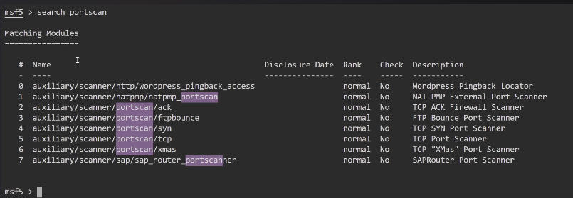
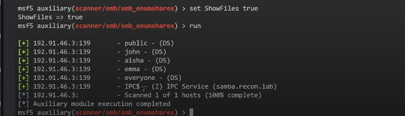
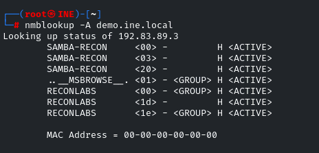
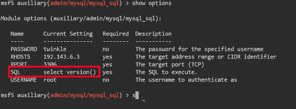
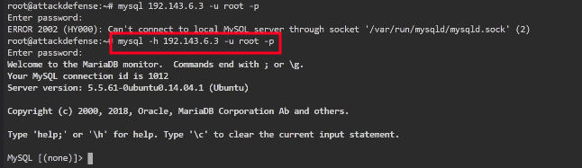
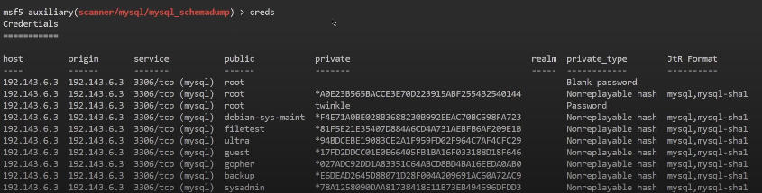

normal scan to get as much info as possible of the ports
Importing NMAP scans into Metasploit Framework
db_status in msfconsole to check if we are connected to postgresql, if
not run the service using systemctl
create a new wrokspace using "workspace -a name".
db_import path_of_file to import the xml file
hosts to confirm the import.
services to see the services in the imported file
we can initiate nmap scan from within the metasploit framework
db_nmap flags_and_ip here to run the scan ( make another workspace to
run a scan on a different ip from the imported file ip)
Port Scanning with Auxiliary Modules
Auxiliary modules allow us to extract information not exploitation.
We can use these modules to scan an internal network , which is not facing
the external network, from an already exploited machine that is the only.
We can not run nmap from that machine because that is mostly blocked.
Transfering binaries to an exploited server/machine to scan internal network
is not recommended.
To search for auxiliary modules from within msfconsole type : search module_name such
as search portscan.

next we have to use the module we want which can done via use full_module_name
use show options to see the option for that selected module.
set the relevant option such as RHOSTS, DELAY, PORT RANGE etc.
run to start the module.
we can run linux utilities directly from within msfconsole.
XODA is an application and msfconsole has one module for its exploitation.
TargetURI is the base address of the webapp in msfconsole
exploit to run the meterpreter handler
sysinfo to see the system info of the target machine.
Type shell > /bin/bash -i to get a
shell session to get a bash session through shell session.
Do ifconfig to see the other network that the victim machine is connected
to.
we can add the route in the meterpreter run autoroute -s ip_here (-s
is the subnet) ( ip is of the other network interface in the internal network
of the target)
so what we are doing is using the actual target to scan one of the other
machines in its internal network.
A command background is used to send the current session
to the background allowing us to run other commands in the meterpreter
session.
we can check the active sessions in the meterpreter by typing sessions .
after this we do a port scan on the target system as normal but this time
we added a route so now we are actually scanning the second machine thorugh
the first target.
back command ends the current module and goes ack to
msf>
udp_sweep module to discover live hosts on the network using udp packets.
FTP Enumeration using msfconsole
is TCP
in msfconsole we can do search type:auxiliary name:ftp to
search for tye based modules
we can check the version of the service using version modules
than search for the modules with version name to see the modules available
for the version of the service
ftp_login module is used to brute force the authentication of the ftp
metasploit has a really good wordlist in /ur/share/metasploit-framework/data/wordlists/
bruteforcing can make the service overwhelmed and stop connection for
sometime.
SMB Enumeration
SMB is a network file sharing protocol which helps to share the file over
a local network.
A printer and such devices use this protocol.
SMB ran on top NetBIOS using port 139 originally, but in newer version
it uses port 445.
SAMBA is linux version of SMB, also allowing windows systems to access
Linux shares and devices.
We can set global variables which can be used to set the value of certain
variables such as RHOSTS for all the modules
setg RHOSTS ip_here.
info to learn more about the module of a metasploit framework
The smb_enumshares module gives the users whose shares can be accessed
if their username and pass are known

we can use utility smbclient -L \\\\ip_here\\ -U admin
sm_loginchecker allows us to brute force login
Meaning of the Slashes
// → This says: "This is an SMB network location."
10.10.10.5 → The IP address of the SMB server.
/ → This trailing slash means: "Look at the root of this SMB host — show me all shared folders (shares)."
This shows all the shared folders the admin user
can see on the machine 10.10.10.5.
smbclient -L \\\\ip_here\\share_name_here -U admin to
login as that user and then see what files are shared for this user(you
should know the pass for admin tho)
nmblookup is another utility to enumerate

rpcclient is a command-line tool from the Samba suite that
allows you to:
🛠️ Interact with Windows services over SMB (port 445) using RPC (Remote Procedure Call)
It's mainly used for enumeration — users, groups, policies,
shares, SIDs, and more.
enum4linux is good for enumerating smb
you can use a wordlist to search for hidden shares
Web Server Enumeration
http_version
http_header
robots_txt
dir_scanner (for directory brute forcing)
files_dir (for brute forcing exisiting files)
http_login
In the Metasploit http_login module, the AUTH_URI option
tells the scanner:
📍 Which HTTP path/endpoint to send the login requests to (i.e., the login
form or API path).
unset command to unset an option in the msfconsole
apache_userdidr_enum
brute_dirs
dir_list
http_put
These are all the auxiliary modules above
MySQL Enumeration
first thing we need to do is to find the version of mysql running on the
target system
mysql_login (performs brute force login attack)
Normal and repetitive shit just like above
mysql_sql(allows us to execute sql queries)
add query here

mysql_schemadump ( displays all the tables)
mysql utlity in linux to interact with mysql service remotely

creds to dump the credentials

SSH Enumeration
same as above, use modules
SMTP Enumeration
same modules
you can connect to smtp servie using netcat and telnet
VRFY user_name (to see if a user exits)
EHLO server_name (to see what commands are available to execute)
PIPELINING Allows multiple commands sent in one
go for performance (used in scripts).
this command and the ones below it are informational.
SIZE 10240000 Server accepts messages up to 10MB.
ENHANCEDSTATUSCODES Enables extended error messages
(helps with troubleshooting).